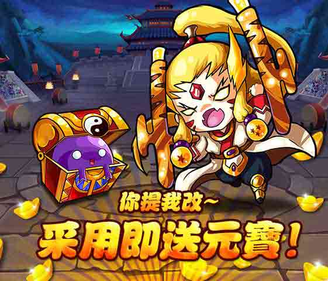

為了使遊戲不斷完善,變得更好,所有參與用戶凡在遊戲中發現BUG,請勿討論使用,
可將問題發送至客服郵箱,被確認的遊戲Bug會儘快修復,
並給予第一位提交Bug的用戶
50元寶
獎勵和論壇公告(點名感謝通知)！ (越嚴重的BUG會給予越多的獎勵哦) 而如果玩家對遊戲有任何好的想法或者提議也可以發送郵件至客服郵箱,您的付出一定會得到滿意的答覆.
發送郵件至客服郵箱一定記得提交您的兩項資訊:所在大區+角色名稱
《風林火山》客服郵箱:support_flhs@negaplay.com
《風林火山》客服 QQ:1109761430